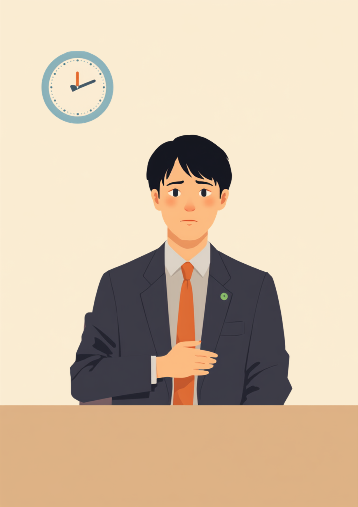
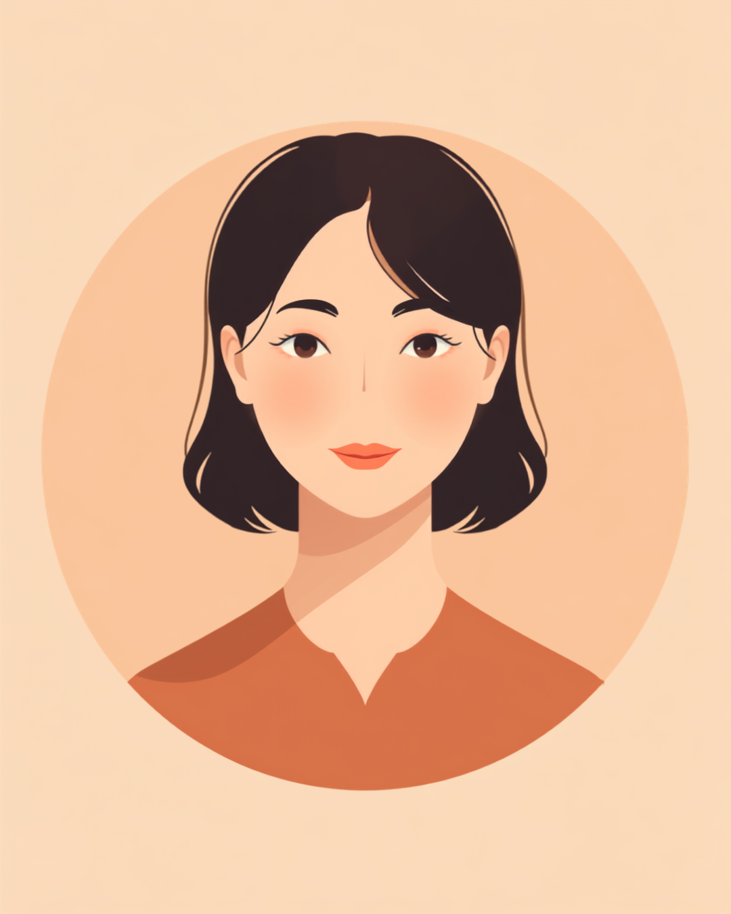

会議中に何度も時計を見てしまう、電車は各駅停車しか選べない、飲み会や長時間の外出が怖い。そんなふうに、頭の中の一部がいつも「次にトイレに行けるのはいつか」に占領されている方がいます。過活動膀胱や神経因性の頻尿は、外からは見えない悩みであるぶん、「気にしすぎ」「そんなに?」と受け止められてしまいやすい特徴もあります。この記事では、頻尿の悩みを抱えながら働く方が感じやすい職場との摩擦と、伝え方、使える制度を当事者の声をもとに整理しました（2026年8月時点の情報です）。
PR



時計が気になって、話の内容が半分も入ってこない
「また行きたいの?」と思われるのがつらい、頻尿と仕事の摩擦

過活動膀胱は、膀胱が本来ためられるはずの尿量に達する前に収縮してしまい、急な強い尿意（尿意切迫感）が起こりやすくなる状態です。神経の働きが関係して同じような症状が出る場合は、神経因性膀胱と呼ばれることもあります。まめざる
就労支援の現場で関わってきた中で、頻尿の悩みを抱えながら働く方から繰り返し聞いてきた言葉があります。「1時間の会議のあいだ、話の内容よりトイレのことのほうが頭を占めてるんです」というものです。過活動膀胱は、我慢が足りないとか、気にしすぎているとかいう話ではなく、膀胱の働き方に関わる状態です。それでも外見からはまったく分からないぶん、周囲には「トイレが近い人」という印象だけが残ってしまったり、あるいは誰にも気づかれないまま一人で耐え続けてしまったりすることがあるようです。
本人にとっては、会議のたびに出口の近い席を選ぶ、外回りのルートをトイレの場所から逆算する、飲み会や長時間の移動を理由をつけて避けるといった工夫を、誰にも気づかれないように積み重ねている日々でもあります。それを続けているうちに、「几帳面な人」「心配性な人」という印象だけが定着し、本当の理由は誰にも話せないまま、という方も少なくないようです。
!
頻尿の原因や症状の出方には個人差があります。この記事で挙げる内容がそのまま当てはまるとは限らないため、心当たりがある場合は自己判断せず泌尿器科などの専門医に相談することをお勧めします。
「正直言うと、会議中にトイレに立つのが怖くて、会議の1時間くらい前から水を飲むのをやめるようになりました。頻尿だって周りに思われたくなくて、喉が渇いても我慢して、気づいたら1日コップ1杯くらいしか水分を取ってない日もあって。ある日どうしても我慢できなくなって、真っ青な顔で『すみません』って会議室を抜け出したことがあるんですけど、あのときは本当にきつかったです。今思うと、水分を減らすのは逆効果だったんだろうなと思います。」
30代・女性（過活動膀胱・事務職）
相談の一コマ

相談者
会議中にトイレのことばかり気になって、話が全然頭に入ってこないんです。周りにはただぼーっとしてる人に見えてると思います。
まめざる
頭の中がずっと「次はいつ行けるか」でいっぱいになってしまう感覚、頻尿の悩みを持つ方からよく聞きます。集中できないのは、あなたの意識が足りないからではないと思いますよ。
相談者
水分を減らせば少しはましになるかなと思って、最近ほとんど水を飲んでなくて…
まめざる
それは体にとってはつらい対処法かもしれません。次の章で、水分を我慢する以外にできそうな工夫を一緒に見ていきましょう。
会議中も通勤中も。トイレのことで頭がいっぱいになる仕組み
試験や会議の前になると急に尿意が強くなる、という経験がある方は少なくないようです。これは緊張やストレスが自律神経の働きに影響し、脳が「非常事態」と捉えて尿意のサインを出しやすくなるためだと説明されることがあります。厄介なのは、この仕組みが「トイレのことを気にする→尿意を意識する→さらに不安になる」という悪循環を作りやすいところです。一度でも我慢できずに困った経験があると、次からは「また同じことが起きるのでは」という予期不安が加わり、症状がなくても気になってしまう状態に発展することもあるとされています。
i
骨盤底筋を鍛えるトレーニングや、カフェイン・アルコールの摂取量を見直すといった生活習慣の工夫、必要に応じた薬物療法など、症状の緩和につながる方法があるとされています。ひとりで抱え込まず、気になる場合は泌尿器科に相談してみることをお勧めします。
「営業で外回りをしているんですが、電車移動のたびにトイレの場所を頭の中で確認してから乗るのが癖になってます。各駅停車しか乗らないのも、急行の途中でトイレに行けなくなるのが怖いからで、後輩に『なんでいつも各停なんですか』って聞かれたときは、正直答えに困りました。半年くらい前からは商談前に必ずトイレに寄るようにしてるんですが、それも『几帳面ですね』で片付けられてるだけで、本当の理由はまだ誰にも話せてません。」
50代・男性（神経因性頻尿・営業職）
職場にどう伝える、水分を我慢せずに働き続けるために
頻尿の悩みは、シャントや義足のように目に見える配慮の必要性とは違い、周囲からは「なぜそこまで気にするのか」が伝わりにくい特徴があります。だからこそ、症状の仕組みをすべて説明しようとするより、業務に関わる具体的な場面だけを切り出して伝えるほうが、双方にとって負担が少ないとされています。
具体的な場面に絞って伝えるという考え方
- 「会議中に一度、席を外すことがあります」
- 「移動の多い業務より、座席から動きにくい業務のほうが助かります」
- 「外回りのルートは、事前に確認させてもらえると安心です」
- 「体調が悪そうに見えても、聞かれるほどのことはほとんどありません」
水分を我慢し続けるより先に、具体的な困りごとを共有しておくほうが、結果的に気持ちが楽になったという声をよく聞きます。「気にしすぎ」と思われる不安があっても、業務に関わる範囲だけ伝えれば十分なことがほとんどです。まめざる
病名や症状の詳細まで伝える義務はありません。信頼できる上司や人事担当者に、まずは業務に関わる範囲で共有し、そこから必要な範囲だけチームに広げてもらう、という進め方をとっている方もいるようです。座席の配置や外回りのルートなど、あらかじめ調整できる範囲を確認しておくことで、日々のストレスが減ったという声も聞かれます。
使える制度と、一人で抱えないための相談先
身体障害者手帳という選択肢
頻尿の症状そのものだけでは、身体障害者手帳の対象にならないことが多いとされています。ただし神経因性膀胱など原因となる病気や、日常生活への影響の程度によっては、内部障害の区分に該当する場合があります。詳しくは主治医や自治体の障害福祉窓口に確認するのが確実です（2026年8月時点の情報です）。手帳を取得すると、障害者雇用枠での就職や、企業側の合理的配慮を前提にした働き方を選びやすくなる場合があります。
相談できる窓口
- 泌尿器科（症状の相談、原因の特定、治療法の選択）
- 職場に選任されている産業医（50人以上の事業場に選任義務あり）
- 自治体の障害福祉窓口、身体障害者手帳の相談窓口
- 就労移行支援事業所（働き方の相談、職場との調整）
頻尿の原因や症状の現れ方、必要な配慮の内容には個人差があります。この記事の内容がそのまま当てはまるとは限らないため、実際の判断は主治医・支援者・自治体の窓口とよく相談しながら進めることをお勧めします（2026年8月時点の情報です）。
「トイレが近いこと」は、サボりでも気にしすぎでもありません。水分を我慢し続けるのではなく、具体的な困りごととして先に共有しておくことは、決して大袈裟なことではありません。
よくある質問
Q. 過活動膀胱は治療で良くなりますか？
骨盤底筋を鍛えるトレーニングや生活習慣の見直し、薬物療法など、症状の緩和につながる方法があるとされています。ただし効果の出方には個人差があるため、泌尿器科などの専門医に相談しながら進めることをお勧めします。
Q. 頻尿や過活動膀胱は障害者手帳の対象になりますか？
頻尿の症状そのものだけでは対象にならないことが多いとされていますが、神経因性膀胱など原因となる病気や日常生活への影響の程度によっては、身体障害者手帳の内部障害の区分に該当する場合があります。詳しくは主治医や自治体の障害福祉窓口にご確認ください（2026年8月時点の情報です）。
Q. 職場にどう伝えればいいですか。変に思われないか心配です。
症状の詳細まですべて説明する必要はないとされています。「会議中に一度席を外すことがある」「移動の多い業務より座席の近い業務が助かる」など、業務に関わる具体的な場面に絞って伝える方法が助けになる場合があります。
Q. 水分を控えるのは体に良くないですか？
頻尿が気になるあまり水分摂取を極端に減らしてしまうと、脱水や体調不良につながるおそれがあるとされています。水分の摂り方に不安がある場合は、自己判断で我慢を続けず医師に相談することをお勧めします。
Q. 通勤中の不安にはどう対処している人が多いですか？
あらかじめ乗換駅や途中下車できる駅のトイレの場所を把握しておく、各駅停車を選ぶ、始発駅から座れる時間帯を選ぶなど、ルートや時間帯を工夫している方が多いようです。それでも不安が強く生活に支障が出る場合は、我慢せず専門医に相談することをお勧めします。
どれか一つだけでなく、4つをバランスよく持っておく
PR


一人で抱え込む前に、今の気持ちを話してみませんか
「まだ迷っている」段階でも大丈夫です。mimemimeの無料相談は、今の状況の整理から一緒に始められます。
無料で話してみる
この記事に、聞いてみたいことはありますか？
「自分の場合はどうなんだろう」と思ったことを、気軽に書いてみてください。いただいた質問は個別にお返事したうえで、匿名で記事にすることがあります。
おのざる
mimemime代表。就労支援の現場経験をもとに、障がいのある方の働く不安に寄り添う記事を執筆。